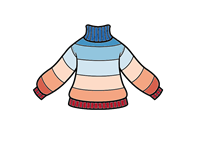

The Impact of Home Energy Efficiency Measures on Children’s Respiratory Health: A Scoping Review
Peer-reviewed paper
Authors: Richa Kulkarni, Eleanor Harrison, Freya F Semple, Abigail Whitehouse, Tom Clemens, Olivia V Swann
Publication Date: 1st Dec 2025
Children’s homes play a key role in shaping their respiratory health. Amid rising fuel poverty and Net Zero targets, the UK has implemented Home Energy Efficiency (HEE) measures such as insulation, double glazing, and heating upgrades.
While these measures improve thermal comfort and reduce carbon emissions, they may inadvertently compromise indoor air quality, and consequently, respiratory health.
This scoping review explored the association between HEE measures and respiratory outcomes in children under 18 years of age.
Go to publication
Homes, Heat, and Healthy Kids – early childhood respiratory infections in the Lothians (overview and plan)
Seminar presentation
Presenter: Tim Wilding
Presentation Date:18th March 2026
The home environment is crucial in early childhood (0-5). This talk introduces the Homes, Heat and Healthy Kids project
and its research into the effect of household interventions on respiratory infections at that age.
This project links primary & secondary healthcare, housing, environmental, and socioeconomic data across the Lothians within DataLoch. This talk will describe some of the planned analysis of this linked dataset – infection counts stratified by housing characteristics, socioeconomic measures, local climate, and annual pollution exposures.
Talking Data and Medicine
Blog & Presentation
Communicating complex data science to clinical audiences.
Damp & Mould
Blog & Presentation
What can you do about Damp and Mould.